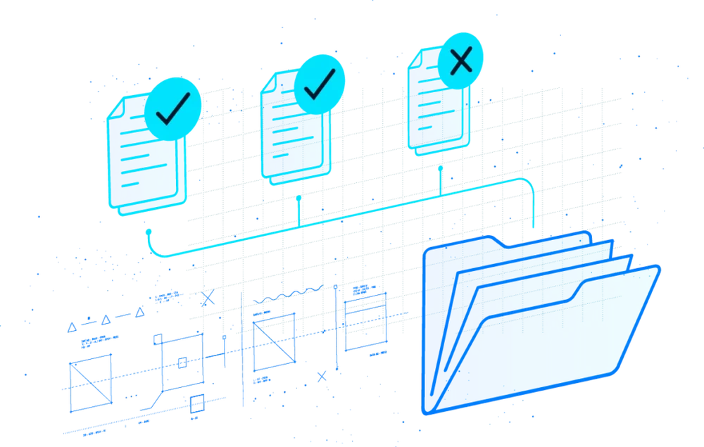

OneMedNet Corporation · Nasdaq: ONMD · Eden Prairie, Minnesota
Medical imaging data, de-identified and licensed for research.
OneMedNet curates imaging real-world data from a network of healthcare providers and licenses it to life-science and AI companies. It reported revenue of $1.36M for 2025, and its auditor has expressed substantial doubt about its ability to continue as a going concern.
- 1-for-10 reverse stock split, effective at 12:01 a.m. ET per the 8-K
- Nasdaq deadline to regain the $1.00 minimum bid price
Filings reviewed through the 8-K filed Sep 29, 2026. Amounts in US dollars. No share price is shown.
At a glance
The position, in five facts
- Healthcare sites in the network
- 2,130
- As stated in the 10-K for 2025. The press release dated Sep 25, 2026, filed with the 8-K of Sep 29, 2026, says “more than 2,300”, and the company’s investor page says “over 2,130”. 10-K 8-K
- Revenue, year ended Dec 31, 2025
- $1.36M
- $1,254 thousand from iRWD data delivery and $105 thousand from the BEAM platform, which was decommissioned in May 2025. 10-K
- Cash at Jun 30, 2026
- $358,000
- Net cash used in operating activities was $3,417 thousand in the six months then ended. 10-Q
- Shares after the 1-for-10 reverse split
- 6,012,591
- Approximate, from the 8-K, down from about 60,125,902 at Sep 27, 2026. The press release gives about 59,286,450 shares at Sep 24 becoming 5,928,645. 8-K
What it does
Imaging data, curated where it is kept.
“OneMedNet is a global provider of clinical imaging innovation and curator of regulatory-grade Imaging Real World Data”
The model
The company says its data stays at the provider until it is licensed: “all the data remains locally onsite until specific de-identified data is licensed for a particular life science research opportunity”. Revenue works the same way: “iRWD is sold on a fixed fee basis based on the number of data units and the cost per data unit committed to in the customer contract. Revenue is recognized when the data is delivered to the customer.” 10-K
Who buys it
The 10-K says “life science companies, including pharmaceutical companies, artificial intelligence (‘AI’) developers, medical device businesses, and clinical research organizations” share the challenge of obtaining patient data that matches their cohort specifications. It names no current customer; the only customer it names is the Republic of Ireland, for its earlier BEAM image-exchange product. The 10-K and 10-Q describe the company as “a healthcare software company with solutions focused on digital medical image management, exchange, and sharing”. The company’s website also lists academia, retail, finance and telecom as audiences, and offers AI data masking for healthcare, finance, retail and telecom.
Why imaging
The 10-K states that “approximately 90% of healthcare data, by size, is associated with imaging” and that “Historically, much of imaging value has been derived from its initial review, and further gains from the image archives have been very limited”. It also notes that in late 2022 “the FDA published proposed guidance related to data standards for product submissions with Real World Data”.
The 10-K also gives market-size estimates: growth rates of 7.4% and 8.2% for real-world-evidence solutions, with no source named in the passages reviewed, and 9.1% for the real-world-data market, which it attributes to Coherent Market Insights. This page does not reproduce the market sizes.
How it works
Five steps from request to cohort
The sequence below is the company’s own description on onemednet.com. It is a statement of process, not a measure of results.
- 1
Request
A customer can “request data with as many complex and precise specifications as you need”.
- 2
Refine
The company’s platform tells the customer “how many samples we can fulfill with a 100% criteria match”.
- 3
Curate
“Our team of clinical experts dives into the massive pools of unstructured data available to us through our network of providers”.
- 4
Deliver
Data is delivered “usually in batches”.
- 5
Dive deeper
“Our data networks are live,” so a customer can keep following a cohort over time.

What the 10-K says sets it apart
“We believe that OneMedNet unlocks the value in imaging and EHR data in the following three principal ways”: Regulatory Grade, On Demand and Expertly Curated. The 10-K says the data is “fully de-identified using a multi-step quality control process”. These are the company’s beliefs and descriptions, not findings. 10-K
Traction
What the revenue comes from.
One product line now supplies nearly all of it. The earlier product, BEAM, was decommissioned in May 2025.
| Stream | FY2025 | FY2024 | H1 2026 | H1 2025 |
|---|---|---|---|---|
| iRWD data delivery | 1,254 | 292 | 388 | 187 |
| BEAM subscription | 105 | 351 | none | 105 |
| Total revenue | 1,359 | 643 | 388 | 292 |
FY is the year ended December 31; H1 is the six months ended June 30. Sources: 10-K, 10-Q. The 10-K says “The BEAM platform was decommissioned in May 2025 and no revenue was generated from this platform thereafter.”
A narrow customer base
Three customers each accounted for 10% or more of 2025 revenue: 21%, 15% and 12%, together 48%. In 2024 two customers accounted for 35% and 17%, together 52%. Three customers also made up 51% of receivables at December 31, 2025.
Announced by the company
- Sep 30, 2026“OneMedNet Signs Seven Figure Multiyear Agreement to Power a Partner Sold Derivative Data Solution”
- Sep 22, 2026“OneMedNet Expands Commercial Reach Through Multi-Year Resale Agreement with Atropos Health”
Headlines as shown on the company’s investor page, which links to its news index. These agreements are not described in the SEC filings reviewed, and no contract values or dates of revenue are filed.
Financials
Results, balance sheet and cash
US dollars, in thousands as reported. The annual figures are audited, from the 10-K filed Mar 30, 2026. The six-month figures are unaudited, from the 10-Q filed Aug 14, 2026.
The 10-K says the gain on troubled debt restructurings “represents the difference between the net carrying values and consideration transferred” when deferred underwriter fees and certain trade payables were settled. Net cash used in operating activities in FY2025 was $7,503 thousand.
The six-month figure averages about $570 thousand a month (derived: 3,417 divided by 6). Financing in the period came from related-party subscriptions ($2.1 million) and the 2024 standby equity purchase agreement ($1.0 million), per the 10-Q.
| Line | FY2025 | FY2024 | H1 2026 | H1 2025 |
|---|---|---|---|---|
| Revenue | 1,359 | 643 | 388 | 292 |
| Cost of revenue | 1,862 | 924 | 1,542 | 737 |
| Gross margin | (503) | (281) | (1,154) | (445) |
| Total operating expenses | 9,164 | 9,324 | 3,659 | 3,906 |
| Loss from operations | (9,667) | (9,605) | (4,813) | (4,351) |
| Net income (loss) | (2,801) | (10,129) | (4,625) | 1,080 |
| Line | Dec 31, 2025 | Jun 30, 2026 |
|---|---|---|
| Cash and cash equivalents | 585 | 358 |
| Investment in crypto assets (Bitcoin) | 506 | none |
| Accounts receivable, net | 495 | 664 |
| Total assets | 2,151 | 1,364 |
| Total liabilities | 5,116 | 4,882 |
| Total stockholders’ deficit | (2,965) | (3,518) |
| Accumulated deficit | (104,370) | (108,995) |
Dec 31, 2025 balances are as shown in the 10-Q. Shares outstanding were 51,796,728 at Dec 31, 2025 and 57,721,343 at Jun 30, 2026, both before the 1-for-10 reverse split of Sep 29, 2026. EDGAR filings: CIK 0001849380.
Material disclosures
What a reader should know before relying on any figure above
Taken from the company’s own filings, with the filing beside each item. Share counts and per-share figures in filings dated before September 29, 2026 are pre-split.
Going-concern doubt
The 10-K says the auditor’s report “contains an explanatory paragraph regarding substantial doubt about our ability to continue as a going concern”, and that management “does not believe that cash and cash equivalents are sufficient to meet our foreseeable cash needs for at least the next 12 months”. The 10-Q for the quarter ended June 30, 2026 makes the same statement. Cash was $358,000 at that date, and net cash used in operating activities was $3,417 thousand in the six months then ended, about $570 thousand a month on average (derived). Accounts payable and accrued expenses were $3,474 thousand at that date, including $1,632 thousand of professional fees. After the balance-sheet date the filings report a $1.0 million related-party subscription (July 2026) and a new standby equity purchase agreement for up to $25 million; no filing reviewed reports an advance under it, and none can be requested until a resale registration statement is effective. 10-K 10-Q 8-K, Jul 1, 2026
What sits between the 2025 operating loss and the net loss
FY2025 loss from operations was $9,667 thousand. Total other income of $6,867 thousand, including a $5,569 thousand gain on troubled debt restructurings and a $1,285 thousand gain from the change in fair value of convertible notes, brought the net loss to $2,801 thousand. Net cash used in operating activities was $7,503 thousand. Cost of revenue exceeded revenue in FY2025 ($1,862 thousand against $1,359 thousand). It did so again in the six months ended June 30, 2026 ($1,542 thousand against $388 thousand). 10-K 10-Q
A 1-for-10 reverse split, two share counts and a Nasdaq deadline
The 8-K says the reverse stock split was “to be effective as of 12:01 a.m. Eastern Time on September 29, 2026” and is “intended to bring the Company into compliance with the minimum bid price requirement for continued listing on the Nasdaq Capital Market”. The 8-K gives about 60,125,902 shares outstanding at September 27 becoming about 6,012,591; the press release filed with it gives 59,286,450 at September 24 becoming about 5,928,645. The filings reviewed do not explain the difference. Authorized shares are unchanged at 100,000,000: “The total authorized number of shares will not be reduced.” The proxy statement’s illustrative table shows 94,071,355 shares “reserved for future issuance” at a 1-for-10 ratio. A Nasdaq notice of April 14, 2026 gave the company until October 12, 2026 to regain compliance, which requires a closing bid of at least $1.00 for ten consecutive business days; no filing reviewed reports that it has. The 8-K of April 20 and the 10-Q say that if the company does not regain compliance by then it may be eligible for an additional 180-calendar-day period if it meets the other listing standards and gives notice of its intent to cure the deficiency, by a reverse split if necessary. A Nasdaq notice of October 8, 2025 confirmed compliance after an earlier bid-price deficiency notice of April 10, 2025. 8-K, Sep 29, 2026 8-K, Apr 20, 2026 10-Q Proxy statement 8-K, Oct 9, 2025
Dilution and the financing that funds the company
Shares outstanding rose from 51,796,728 at December 31, 2025 to 57,721,343 at June 30, 2026, an increase of about 11% (derived), before the reverse split. Both figures are from the 10-Q; the 10-K reports 51,984,474 shares outstanding at December 31, 2025, and the filings reviewed do not reconcile the two. In the first half of 2026 two related-party investors bought 2,538,441 shares at $0.58 to $0.93 for about $2.1 million, and in July 2026 a related party bought 1,449,275 shares at $0.69 for $1.0 million (pre-split prices). The 2024 standby equity purchase agreement with Yorkville supplied $1.0 million more in the half. The new agreement of July 1, 2026 lets the company sell up to $25 million of stock to Yorkville at 97% of the market price, capped at 19.99% of the shares outstanding at June 30, 2026 (11,386,834 shares, computed in the 8-K on 56,952,652 shares, a different count from the 10-Q balance sheet) unless stockholders approve more or “certain pricing conditions are satisfied”. The commitment period under the 2024 agreement expired in June 2026. The 10-Q excludes 16,758,630 potentially dilutive shares from diluted earnings per share because they would be anti-dilutive: 12,181,019 warrants and 4,577,611 restricted stock units (pre-split). A forward contract to issue 1,240,644 shares to ARC Group Limited is recorded in equity, and on September 18, 2026 stockholders added 1,000,000 shares to the 2022 equity plan reserve. 10-Q 10-K 8-K, Jul 1, 2026 8-K, Sep 23, 2026
Control and related parties
The proxy statement shows the nine directors and executive officers as a group holding 50.2% of the shares (29,734,120 of 59,286,450, including shares issuable within 60 days), with Dr. Thomas Kosasa at 31.3% and Dr. Jeffrey Yu at 14.7%. The 10-Q says the company’s principal sources of liquidity are “proceeds from related party investors, private placement transactions, investments in Bitcoin and cash received from customers”. Among the related-party subscriptions it names Dr. Kosasa, a director, who bought 280,898 shares at $0.89 on April 23, 2026 and 268,817 shares at $0.93 on May 18, 2026, about $250,000 each; the proxy statement states the board has determined he is an independent director. The 10-Q also reports an officer’s accrued salary converted into 219,429 shares, expenses of about $0.04 million in the first half of 2026 with an accounting firm majority owned by the CFO, who is an independent contractor, and about $0.1 million with a software company wholly owned by the CTO. Proxy statement 10-Q
A narrow customer base
Three customers accounted for 48% of FY2025 revenue (21%, 15% and 12%) and 51% of receivables at December 31, 2025. In FY2024 two customers accounted for 52% (35% and 17%). Each of the two FY2024 customers was below the 10% reporting threshold in FY2025, and each of the three FY2025 customers was below it in FY2024. The BEAM platform, which supplied $105 thousand of FY2025 revenue and $351 thousand of FY2024 revenue, was decommissioned in May 2025. 10-K
Material weaknesses and restatement language
The 10-K concludes that “our disclosure controls and procedures were ineffective because of material weaknesses in our internal controls over financial reporting”, with the disclosure-controls paragraph citing the identification of non-routine transactions and segregation of duties, and the internal-control paragraph citing segregation of duties and proper revenue recognition. A risk-factor sentence says that “Such misstatements have resulted in the restatement of the financial statements included in this Annual Report”; the 10-K’s cover-page box for error corrections is not checked and the passages reviewed identify no restated period. The 10-Q concludes the same for June 30, 2026: disclosure controls were ineffective. EDGAR’s XBRL data also shows a Form 10-K/A filed November 5, 2024 (accession 0001493152-24-043625) reporting a 2022 net loss of $30.5 million against $6.2 million as first filed; this page did not read that filing. 10-K 10-Q
A complaint from an affiliate of the SPAC sponsor
On November 6, 2025 ARC Group Limited and ARC Opportunity Fund Limited sued the company and certain officers in the District Court of Minnesota, Fourth Judicial District, alleging breach of financial advisory contracts made before the 2023 business combination, the improper cancellation of shares and unpaid cash amounts, and tort claims, and seeking reinstatement of the shares or damages, including punitive damages, in amounts the complaint does not specify. The 10-Q says the sponsor is an affiliate of ARC and that the company “denies liability with respect to all disputed amounts” and is assessing counterclaims over what it calls self-dealing transactions between ARC and the sponsor. ARC voluntarily dismissed the complaint without prejudice on March 19, 2026. The company has recorded cash liabilities to ARC of $0.4 million and the forward contract for 1,240,644 shares. 10-Q
Bitcoin held, then sold
The 10-K says the company “adopted a Bitcoin strategy on the balance sheets as a forward-looking approach to corporate treasury management”. It held $506 thousand of Bitcoin at December 31, 2025 and none at June 30, 2026, after selling Bitcoin for proceeds of $0.4 million in the first half of 2026. The auditor’s report on the FY2025 statements includes an “Emphasis of Matter – Crypto Assets” paragraph. The company’s investor page still carries a shareholder’s quotation about “making Bitcoin the foundational layer of the balance sheet”. 10-K 10-Q
Figures on the website and in filings differ
The 10-K reports a network of 2,130 healthcare sites. The press release dated September 25, 2026, filed with the 8-K of September 29, says “more than 2,300 sites” and “over 90 million patient journeys and 270 million studies”. The company’s investor page says “over 2,130 healthcare sites”, while its homepage shows 90M+ complete patient records, 270M+ clinical exams, 2,300+ healthcare sites and 5B+ administrative records and claims. The 10-K does not state the 90 million, 270 million or 5 billion figures. They are the company’s own statements and are not verified here. 10-K 8-K, Sep 29, 2026
Scale, history and an unaudited recent period
The company had about 23 employees at December 31, 2025, all remote. It completed its business combination with Data Knights Acquisition Corp., a special purpose acquisition company, on November 7, 2023, at total consideration of approximately $200 million, and says it has “experienced net losses in each annual period since inception”. The accumulated deficit was $104.4 million at December 31, 2025 and $109.0 million at June 30, 2026. The six-month figures on this page are unaudited. 10-K 10-Q
Governance
Board, ownership and auditor
From the proxy statement filed Aug 19, 2026 and the 8-K reporting the September 18, 2026 annual meeting. No portraits are used on this page.
| Director | Role as filed |
|---|---|
| Dr. Jeffrey Yu | Founder, Chief Medical Officer, Vice President and Chairman of the Board |
| Aaron Green | Chief Executive Officer and President |
| Robert Golden | Chief Financial Officer and Corporate Secretary |
| Dr. Kenneth Alleyne | Independent director |
| Eric Casaburi | Independent director |
| Sherry Coonse McCraw | Independent director |
| Dr. Thomas Kosasa | Independent director |
| Andrew Zeinfeld | Independent director |
| Holder | Shares | Share |
|---|---|---|
| Dr. Thomas Kosasa | 18,538,150 | 31.3% |
| Dr. Jeffrey Yu | 8,697,077 | 14.7% |
| James Sixsmith | 5,154,955 | 8.7% |
| Data Knights LLC | 3,415,275 | 5.8% |
| Off the Chain, LP | 3,215,650 | 5.4% |
| TD Securities (USA) LLC | 3,025,338 | 5.1% |
| Aaron Green | 1,495,665 | 2.5% |
| All 9 directors and executive officers | 29,734,120 | 50.2% |
Holdings are as of Aug 11, 2026, except Off the Chain, LP and TD Securities (USA) LLC, which the proxy statement takes from Schedule 13G filings reporting holdings as of Sep 25, 2024 and Dec 31, 2024. James Sixsmith’s figure excludes 797,425 shares underlying pre-funded warrants. Percentages are of 59,286,450 shares outstanding and include shares issuable within 60 days. The group total is stated for nine people, and the table lists eight individuals whose holdings add up to it. At the annual meeting on September 18, 2026 stockholders elected three Class III directors, ratified WithumSmith+Brown, PC as auditor for 2026, approved a 1,000,000-share increase in the 2022 equity plan reserve, and approved the reverse split authority (41,068,200 votes for, 739,329 against). 8-K, Sep 23, 2026 Proxy statement
Filings and news
The filings behind this page
Dates are EDGAR filing dates; event dates are in the descriptions. This is the set of filings read for this page, newest first.
| Filed | Form | What it reports |
|---|---|---|
| Sep 29, 2026 | 8-K | 1-for-10 reverse stock split effective Sep 29, 2026; share counts before and after. Open |
| Sep 23, 2026 | 8-K | Annual meeting of Sep 18, 2026: three Class III directors elected, auditor ratified, equity plan reserve increased, reverse split authority approved. Open |
| Aug 19, 2026 | DEF 14A | Proxy statement: directors, ownership, equity plan, reverse split, auditor. Open |
| Aug 14, 2026 | 10-Q | Quarter ended Jun 30, 2026: results, balance sheet, going-concern statement, subsequent events. Open |
| Jul 24, 2026 | 8-K | 2026 annual meeting set for Sep 18, 2026; record date Aug 11, 2026. Open |
| Jul 1, 2026 | 8-K | Standby equity purchase agreement with Yorkville for up to $25 million (Jul 1, 2026). Open |
| Apr 20, 2026 | 8-K | Nasdaq minimum bid price deficiency notice of Apr 14, 2026; compliance period to Oct 12, 2026. Open |
| Mar 30, 2026 | 10-K | Annual report for FY2025, with the auditor’s going-concern explanatory paragraph. Open |
| Dec 23, 2025 | 8-K | Annual meeting of Dec 17, 2025: two Class II directors elected; auditor ratified. Open |
| Nov 7, 2025 | 8-K | Director Jair Clarke will not stand for re-election (notice of Nov 6, 2025). Open |
| Oct 9, 2025 | 8-K | Nasdaq confirms the company regained bid-price compliance (notice of Oct 8, 2025). Open |
Investor alerts. The company offers a mailing list on its investor relations page. This concept page does not collect or store email.
Telephone
800-918-7189Headquarters
OneMedNet Corporation6385 Old Shady Oak Road, Suite 250
Eden Prairie, Minnesota 55344
Investor page
onemednet.com/investor-relationsFilings
SEC EDGAR, CIK 0001849380The investor contact and telephone are published on the company’s investor relations page. The headquarters address is from the proxy statement filed Aug 19, 2026; the EDGAR header lists a different address.